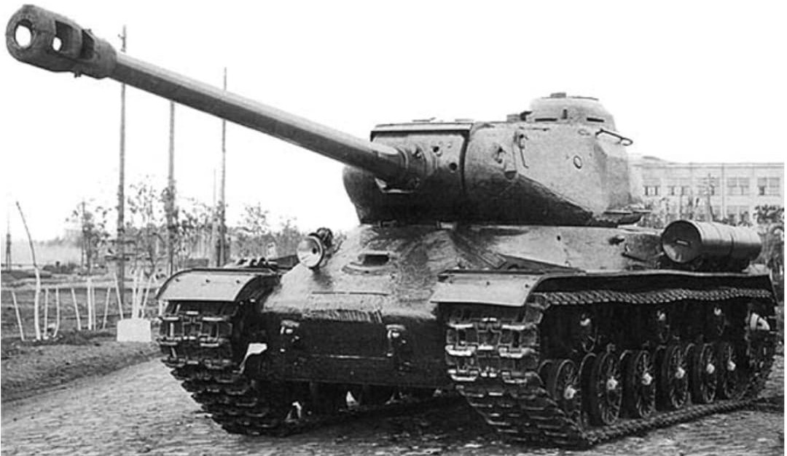

Le IS‑2 (Iosif Stalin 2) est le char lourd soviétique conçu pour briser les lignes allemandes en 1944–1945. Armé d’un puissant canon de 122 mm, il combine blindage épais, puissance de feu et capacité à détruire bunkers, positions fortifiées et chars lourds allemands comme le Tiger et le Panther.

Première version identifiable par son glacis frontal en deux parties. Conçu pour remplacer les KV‑1 et KV‑2, il apporte une puissance de feu supérieure grâce au canon de 122 mm, capable de détruire un Tiger à courte distance.

Version améliorée avec un glacis frontal monobloc incliné, offrant une meilleure protection contre les obus allemands. Le canon de 122 mm reste l’atout principal, capable de détruire bunkers et blindés lourds. C’est le modèle le plus utilisé lors de l’avancée vers Berlin.
Le IS‑2 est l’un des chars lourds les plus puissants de la Seconde Guerre mondiale. Son canon de 122 mm et son blindage épais en font un véhicule idéal pour l’assaut contre les fortifications et les blindés allemands. Les modèles 1943 et 1944 représentent l’évolution du char vers une meilleure protection et une efficacité accrue sur le champ de bataille.
Page du Musée HOP WW2 – Section véhicules soviétiques